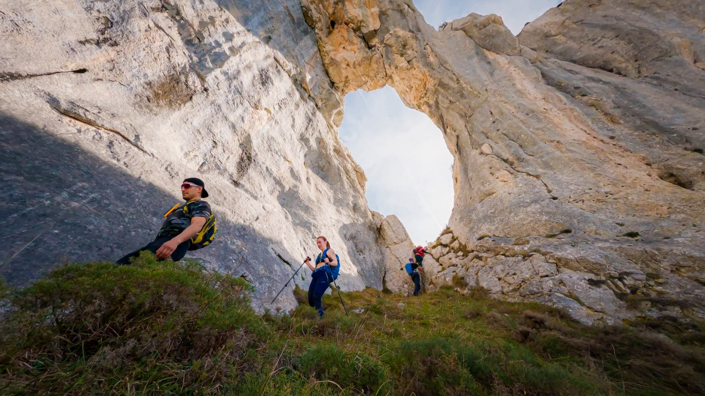
Subida al Pico Barzanalgas, en la Sierra de Sobia, por la Canal de la Faya, que esconde un pequeño arco de roca, que no tiene nada que envidiar al de Peña Mea.
Ruta realizada en febrero con familia y amigos, ¡espero que os guste!
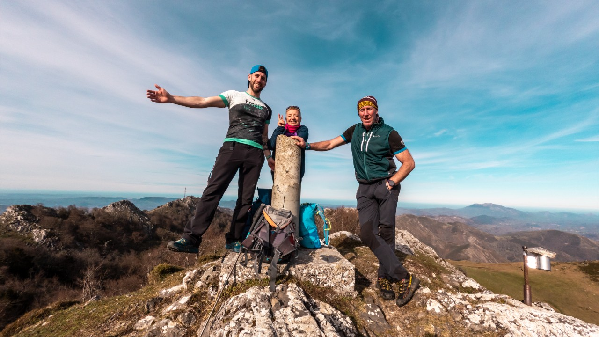
La verdad que cuando planeaba hacer esta cumbre (techo del concejo de Nava) no tenía muchas expectativas en lo que a vistas y experiencia se refiere. Por eso cuando mi padre propuso hacerla por su cresterío sur y tras ver fotos nos adjudicamos el itinerario sin dudarlo.
A pesar de no presentar dificultad técnica ni grandes exposiciones, este cresterío nos regaló muy buenas vistas, además de la compañía alada de unos buitres que solo remontaban el vuelo cuando nos acercábamos mucho a ellos, dejándonos admirar su envergadura y belleza.
Claro ejemplo de que hasta en las cumbres más modestas, se viven experiencias bonitas 😉
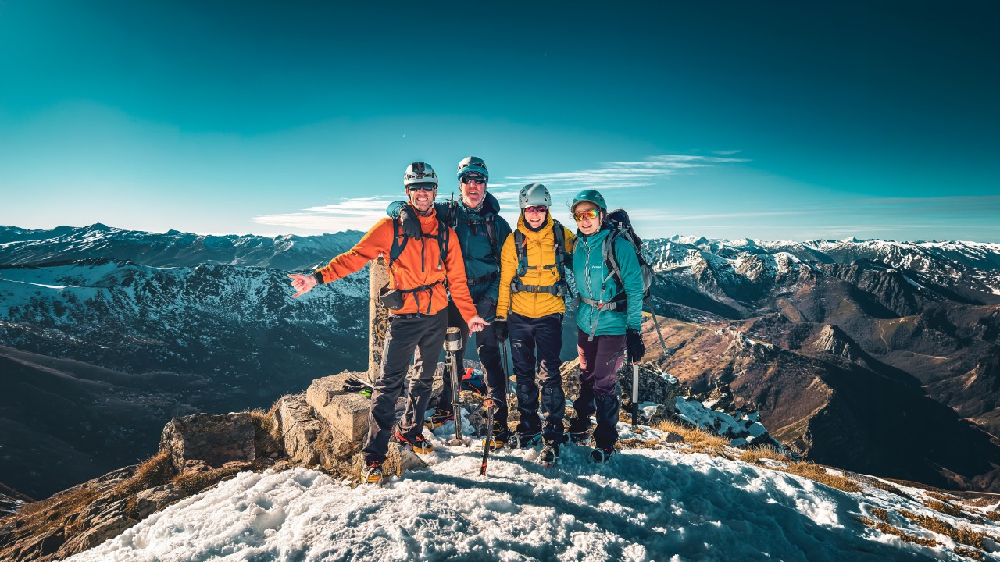
Y con este pedazo de día y de compañía, me estreno en lo de ponerme unos pinchos en las botas, coger un pico y encaromarme en una pala de nieve hasta llegar a una cumbre en invernal 😜
Ascensión invernal de las más clásicas de la Cordillera Cantábrica, el Pico Torres, techo de Caso, por su cara Este, aprendiendo del maestro y compartiendo la experiencia con mis amigas, Anahí y Ana.
Espero que os guste y que este sea el comienzo de muchas más invernales 😁.
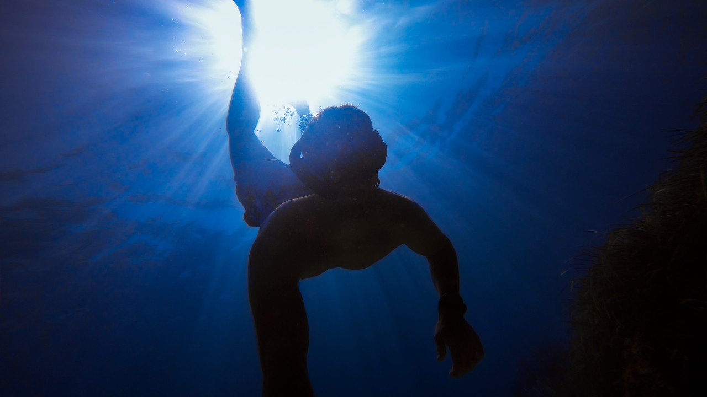
Más allá de la noche, las fiestas y las discotecas, Ibiza es mucho más.
Es naturaleza salvaje, acantilados escarpados, lugares remotos y fondos marinos profundos. Durante la semana que estuve en la isla, no podía perder la oportunidad de hacer snorkel y algo de apnea por sus aguas.
Espero que os guste!
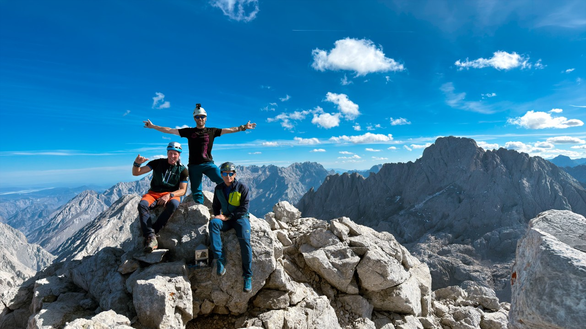
Una de las últimas aventuras que nos deparó el año 2025 nos llevó hasta una cumbre emblemática de los Picos de Europa: ¡¡ la Peña Santa de Enol !!(o Torre de Santa María). Techo de Cangas de Onís y la segunda más alta del Macizo Occidental.
Fue el 18 de octubre, saliendo de Buferrera, junto con mis padres y nuestros amigos César y María, llevándonos en total unas 13 horas (muy bonito llegar a los Lagos de noche). La ascensión y el día en general, totalmente memorable, trepadas de las que dan muy buenas sensaciones y te hacen disfrutar.
Me queda muy buen recuerdo de esta cumbre, ¡nos vemos en la siguiente!
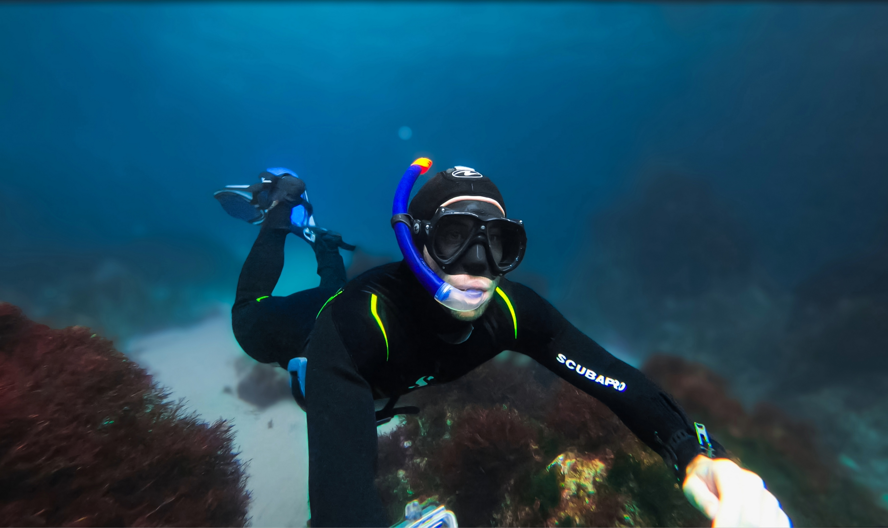
Desde que visité el Faro del Caballo, en Santoña (Cantabria), siempre me quedé con las ganas de bajar el neopreno y el resto del equipo para bucear por esas aguas turquesas...
Y al final, pude hacerlo! Eso si, bajar y subir una mochila con plomos, aletas y demás bártulos por los más de 700 peldaños de acceso al faro no fue lo más gratificante del día precisamente 😅.
Pero mereció completamente la pena; pasar por arcos marinos, cuevas y encontrarme con bastante fauna (hablo de la marina, de la de dos patas mejor no hablar 🤣), hicieron de esta sesión de apnea, una de las más bonitas que he hecho, espero que os guste!
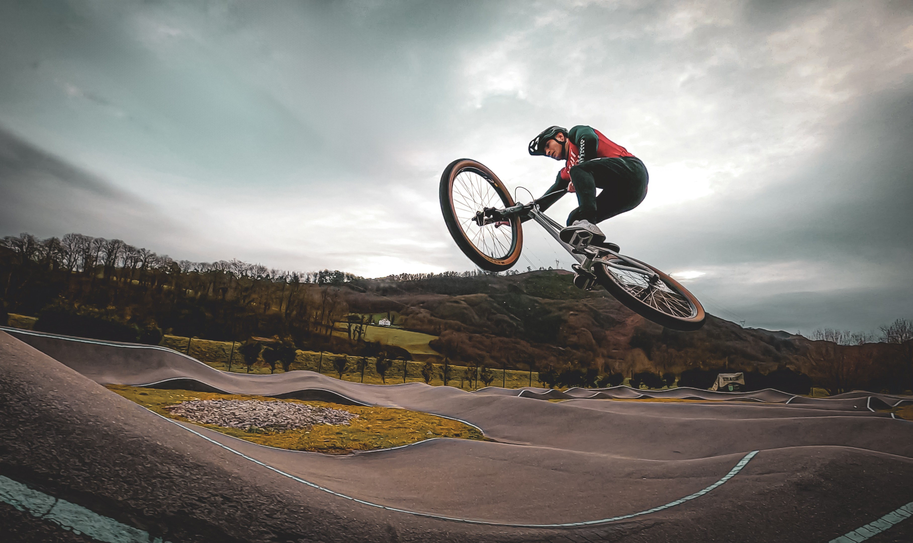
Hace tiempo que no subo contenido de bici (y pensar que todo esto empezó con unos chavales grabando sus primeros saltos con la MTB 😁), así que os dejo por aquí una edit cañera de un día de Pumptrack con Ronald Jaramillo y mi hermana, dándole al pumptrack con los roller.
Enjoy!
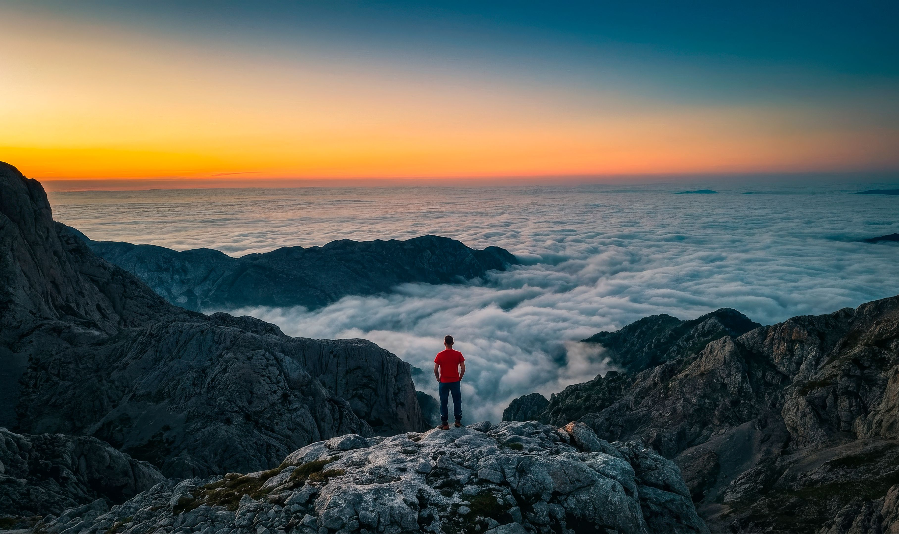
Este es un vídeo algo diferente al resto… pero, te hago una pregunta: ¿hace cuanto que no te paras unos minutos a contemplar a tu alrededor?
Mientras preparaba este vídeo, cada plano pedía alargarlo, dejarlo respirar, dejarle su momento… por eso es un vídeo tan calmado, creo que cada plano tiene detalles en los que merece la pena perderse por unos segundos…
Al igual que en ese atardecer de verano en Picos de Europa, en las inmediaciones del Jou de Los Cabrones, me gustaría que vuestra mirada vuele entre esos gigantes de roca, bañados por la luz de un sol que se hunde en un mar de nubes que se extiende más allá de donde alcanza la vista. Son momentos que merecen ser vistos con tus propios ojos, al menos una vez en la vida.
Me gustaría que, por un momento, entre todo este caos diario, encontréis un momento de tranquilidad en estas imágenes. Espero que os guste.
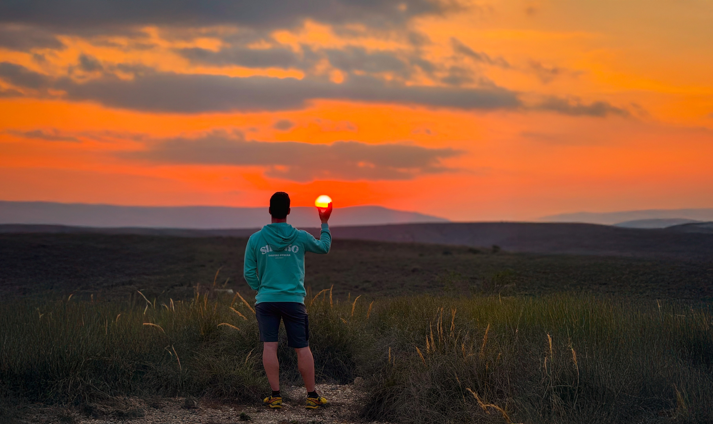
¿Quién diría que una escapada a Málaga y Almería iba a dar tanto de sí? 😁 Desde las costas salvajes de Cabo de Gata, hasta los parajes desérticos de Tabernas, pasando por el encanto de Málaga y el inhóspito Torcal de Utrera... todo lugares que nos llevamos a la memoria, sin dudas, el duende de Andalucía existe y le da ese toque tan especial a sus parajes.
¿Te animas a descubrirlo con nosotros?

Pensaba titular a este video "Los Años Perdidos", al fin y al cabo... todos nos sentimos perdidos en algún momento de nuestra vida. Y durante estos años, he dejado de hacer cosas que me entusiasmaban, que me daban esa "chispa" que te hace ver que cada día merece la pena.
No me estaba dando cuenta, pero estaba perdiendo el equilibrio entre las responsabilidades y lo que me hacía sentir vivo, Entre los pensamientos que te atrapan en el mundo interior y la realidad del mundo exterior. Los indios Cherokee decían que todos tenemos un lobo negro y un lobo blanco en nuestro interior, en constante lucha uno con el otro... y solo ganará al que, nosotros, con nuestros pensamientos y acciones, decidamos alimentar.
Por ello, tras una enseñanza que me dió la vida, de la forma mas repentina e impactante, decido alimentar ese lobo blanco. El lobo negro siempre estará ahí, es parte inseparable, pero miraré a todo lo que me da la vida, día tras día, agradecido de los pequeños detalles, valorando y exprimiendo cada momento. Echando la vista atrás y ver esos años, no como unos años perdidos, si no como unos años de agradecimiento, entre esa aparente perdida, había momentos brillantes, que hacían que la vida tenga sentido.
Y aquí os los muestro, con momentos de reflexión interna, de momentos pasados, contrastados con los grandes regalos que me da la vida, mi familia, mis amigos y la naturaleza que todo lo da. Espero que os guste.

Y otro año más (¡y ya van 4!) que cumplimos con nuestra visita al Resurrection Fest en Viveiro, un lugar que ya es punto de encuentro para nosotros y unos días es los que se para el mundo y podemos disfrutar de la música que más nos gusta. Un XX aniversario que dió mucho de si! Espero que disfruteis de la edit 😉.

Este año La Sacagüeyos ha querido contar con nosotros para hacer el vídeo oficial de la edición del 2023 y nosotros aceptamos encantados el reto que supuso cubrir esta carrera con todos nuestros medios, 114 km de recorrido cubiertos desde coche, moto, drone y FPV para llevaros la magia de esta carrera a los que todavía no la corrieron y para rememorar emociones y sensaciones en los participantes de esta edición.
¡Esperamos que os guste! Siempre es un placer colaborar con gente como Manu y Fran, organizadores del evento, que pusieron toda la logística de la carrera a nuestro servicio.
Y como siempre, gracias por una colaboración más a nuestro historial, Carlos Carreño, cada día te superas más a los mandos del FPV.
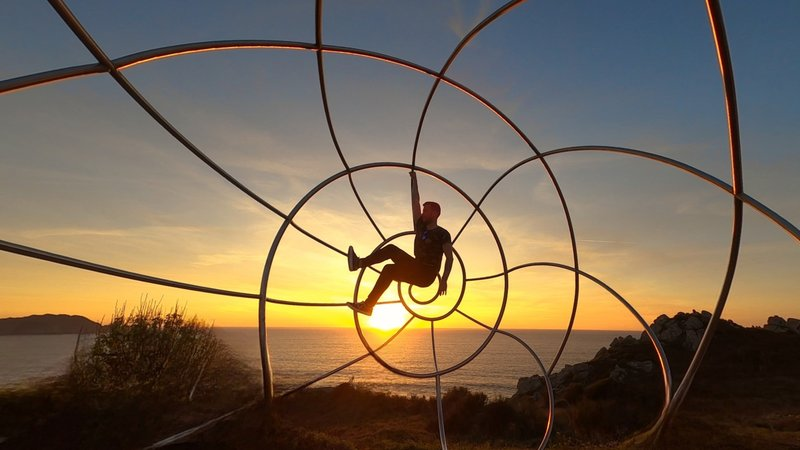
Visitar de nuevo un lugar donde he pasado tantos años y he vivido tantos momentos siempre es bien. Durante casi dos años las Rías Baixas de Galicia han sido mi hogar y esta escapada me hizo recordar porqué llegué a sentirme como en casa.
Sus atardeceres, sus costas con inmensas rías, que dan lugar a rincones idílicos donde desconectar y disfrutar de su naturaleza, la gastronomía... y como no, la compañia 😉

Edición alternativa de parte del metraje utilizado para una campaña de Hunosa y el ayuntamiento de San Martín del Rey Aurelio de cara al Trail Santa Bárbara del año pasado, era una pena no reeditar estas tomas que grabamos en dos localizaciones tan bonitas de San Martín.
A los mandos del dron FPV está Carlos Carreño, un auténtico hacha en pilotar este tipo de drones y los atletas que aparecen son Cristian García y Xurde Ramos, biker y runner, respectivamente.
Un placer colaborar con vosotros en este proyecto!

Aunque fuera finales de octubre, la mar estaba perfecta, tenía que ponerme el neopreno y recorrer esta cala "secreta" 😄
Es un lugar que para mí tiene un encanto especial, no es que esté completamente apartado del mundo, pero la sensación que te transmite el estar ahí, es de estar en un mundo ajeno al que hay en tierra, parece que el tiempo se para.
Espero que os guste, no olvidéis respirar y desconectar por un momento 😉

Será verdad que a partir de cierto momento (algunos dicen que son los 30 😅) los años pasan muy rápido, creo que el 2022 fue el año en el que realmente me di cuenta de ello. Muchas cosas hechas y otras tantas por hacer, retos conseguidos y algún que otro tropezón en el camino, del 2022 me llevo, en general, un buen recuerdo.
Gracias a la gente que ha estado a mi lado, vosotros sabéis quienes sois, apoyándome y ayudándome, solo espero haber devuelto al menos lo mismo que me habéis dado a mi y si no... ya me lo cobráis con intereses para el 2023 😜
2023... aquí te espero, ¿Qué tienes para mí? 😉

I though about you,
I thought about me,
And us,
And if we could turn back time…
Subida al Pico de los Cabrones por la arista noroeste, bajando por la vía clásica. Toda una escalera al cielo, donde se entremezclaban los recuerdos de amaneceres en Picos de Europa que ya son parte del pasado con la concentración que suponía pasearse por esa arista.
Gracias como siempre a mi padre, por guiarme en estas ascensiones y compartir estás experiencias.

𝘞𝘦'𝘳𝘦 𝘢𝘭𝘪𝘷𝘦, 𝘸𝘦 𝘣𝘦𝘭𝘪𝘦𝘷𝘦
T𝘩𝘢𝘵 𝘴𝘶𝘮𝘮𝘦𝘳𝘵𝘪𝘮𝘦 𝘮𝘦𝘮𝘰𝘳𝘪𝘦𝘴
𝘞𝘪𝘭𝘭 𝘯𝘦𝘷𝘦𝘳 𝘧𝘢𝘥𝘦 𝘢𝘸𝘢𝘺
Había que inmortalizar estos momentos de locura, risas, desconexión y amigos en el Resurrection Fest 2022. Después de tantos años esperando, las ganas se notaban y aquí está el resultado, es imposible resumirlo todo en un vídeo, hay que vivirlo para abarcarlo todo: Los grupos que deseabas ver en directo y que te ponen los pelos de punta, las letras que gritas a pleno pulmón, la camaradería que hay incluso en los momentos más bestias de un circle pit, TODO esto y más, lo convierte en una experiencia increíble.
Me quedo con un bonito recuerdo de esos días, con muy buena gente y con muchas ganas de repetir ¡Deseando ver que nos trae el cartel del año que viene!

Viernes 10 de junio, mi amigo Carlos Carreño y yo tomamos nuestras mochilas cargadas de equipo de foto y video y emprendemos camino hacia Vega Uriellu con objeto de pasar la noche. ¿Para dormir? nooo, hay que aprovechar esos cielos estrellados que nos regala Picos de Europa para hacer unos timelapses (vitaminados con el Ronin S, mereció la pena cargar semejante trasto) Pero no es el objetivo principal, esto es solo un aperitivo...
Sobre las 02:30 am nos sumamos a los voluntarios de la Travesera de Picos de Europa rumbo a Horcada de Caín, un lugar que Carlos quiere inmortalizar con su cámara bañado bajo la luz del amenecer, enmarcando a los corredores que pasaran en ese momento. En la subida, se nota la falta de sueño, pero la emoción de conseguir plasmar un momento de los más emblemáticos de la carrera nos impulsa, nos colocamos los crampones al llegar a los pasos de nieve y finalmente, coronamos la Horcada.
El viento sopla y rápidamente ponemos todo las capas de abrigo que traemos con nosotros, casi tan rápido como despliego mi equipo para hacer otro timelapse que lleva tiempo rondando en mi cabeza, no tengo mucho tiempo, el cielo comienza a clarear alarmantemente...
Pero todo sale a pedir de boca, mi cámara captura uno de los amaneceres más sobrecogedores que he visto en mi vida, lo que me permite a continuación pasar al modo vídeo y grabar a los primeros TITANES de la Travesera coronar la Horcada de Caín, extasiados por el paisaje. Todo esto rodeado del ambiente de los voluntarios, el público y Carlos disparando a diestro y siniestro con resultados espectaculares. Cuando acaba la hora dorada, decidimos bajar poco a poco, rumbo a la Vega, donde hacemos un alto y recuperamos fuerzas, han sido más de 24 horas despierto y nuestros cuerpos están agotados, pero con la sensación de cumplir todos los objetivos que nos habíamos impuestos.
Más aventuras como estas, Carlos, socio, que así da gusto!! 😁. Espero que os guste el vídeo!!
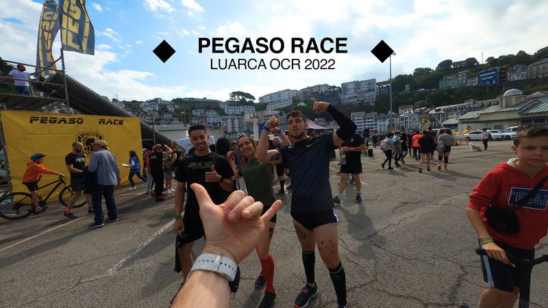
- ¿Te apuntas a una carrera de obstáculos?
La pregunta que dio comienzo a un día de locura, creo que todavía tengo algo de arena, barro y salitre en algún lugar recóndito de mi cuerpo 😂 Pero eh, todo hay que decirlo, hacía tiempo que no me divertía tanto en una carrera, fue como volver al parque de los niños a jugar 🤣
Gracias por la experiencia y las memorias Pablo M. (y amigos), Pablo R. y Andrea, está no va a ser la última 😁

Semana Santa de escalada muy productiva con familia y amigos en las escuelas de escalada de las Llucias y El Llano.
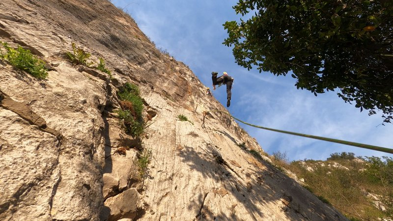
Resumen express de una mañana de escalada del pasado mes de enero, empezamos el año con vuelo!!

+ Dos años en un minuto? Que poco hiciste, no?
- Mmm, podemos decir que he vivido poco y a la vez mucho, ya sabes, por aquí solo tendemos a mostrar los mejores momentos, nuestro mejor escaparate.
+ Ya veo… quieres decir que para ti los malos momentos en estos últimos años han dominado a los buenos?
- No te lo voy a negar, han sido dos años donde la balanza se inclinaba a lo malo. En realidad, muy poca gente sabe por lo que pasé durante estos años, algunos me han dado todo su apoyo y han estado siempre ahí (eternamente agradecido, ellos saben quienes son), otros me han hecho sentir decepción, desengaño al ver que, si yo no sujetaba el hilo que nos unía, se alejaban de mí. En fin, esos momentos no se ponen en un resumen no? Como mucho se entierran en descripciones de publicaciones que casi nunca nadie lee.
+ Y no eres un poco postureta subiendo esto como si nada? No es muy acorde con la realidad…
- Bueno, esto no es un grito al mundo para decir quién soy, es un grito a mi mismo para recordarme quien soy. Para hacerme ver, de nuevo, estos momentos, los que me definen, los que definen mi felicidad, si, son breves, pero son el combustible que me hacen seguir día a día.
+ esperas algo mejor para el 2022?
- Creo que aprendí a dejar de esperar buenos momentos, incluso en los malos se aprende una lección, te fortaleces y continuas, llegarán los buenos , los disfrutarás y se irán… y así, al menos para mí, se vive mejor, valorando lo bueno y lo malo que te toca vivir.

Edit del pasado verano de una pequeña ronda en el skatepark de Cimadevilla, Gijón.

Un día de Freeride con amigos en unos de los spots más brutales de Colunga. Gracias a los riders locales por todo el curro que se han metido para tener un lugar de referencia en esto del Freeride en Asturias. ¡A disfrutar del vídeo y espero que os guste!

Vídeo resumen de uno de nuestros viajes de buceo organizados por el club Cronos Sub. 4 inmersiones repartidas en dos días para re-descubrir los fondos de la ría de Arosa, desde la isla de Sálvora, pasando por el pecio Aries y terminando en la Isla da Rúa. Como siempre, el atlántico y sus aguas ricas en nutrientes nos regalan una gran cantidad de vida para observar, disfrutar y retratar. Espero que os guste!
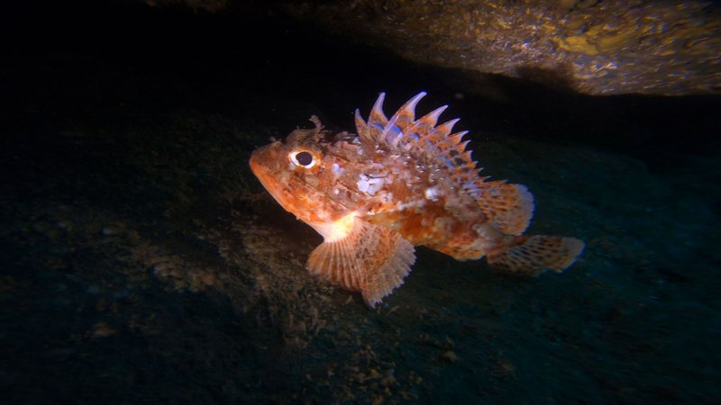
El cabo de Peñas es la zona de referencia en el buceo en Asturias, es una zona expuesta a fuertes corrientes y colmada de farallones de roca que está llena de restos de antiguos naufragios y mucha vida marina. Pocos días se pueden bucear en Peñas de la forma que pudimos el día que grabamos este vídeo, todo un lujo!
Como siempre, esperamos que os guste!

14 años de Tanais Menéndez Filmmaker no se pueden resumir en un vídeo tan corto, pero si que podemos elegir los mejores momentos de los últimos años, ¡¡BIENVENIDOS A TANAIS MENÉNDEZ FILMMAKER!!

Vídeo de buceo en Malta, todo un paraíso para los buceadores! Durante la primera semana de octubre algunos miembros del club Cronos-sub estuvimos buceando en los fondos de esta isla para conocer algunos de los pecios que podemos encontrar allí: el Rozi, el P29, Um El Faroud, MV Karwella y Cominoland de mano de Juan Cazarlo Navarro (DIR Dive Malta), un crack!!
Espero que os guste el vídeo!

La ría de Arousa es un lugar que me enamoró desde la primera vez que la visité en 2016. Sus playas de arena blanca, sus aguas turquesas y la capacidad de contemplarla en todo su esplendor desde sus miradores de roca granítica. En la primavera de este año volví a visitarla, esta vez durante unas vacaciones en O Grove y en la isla de Arousa, que nos brindó unos días más propios del verano, por eso algunos llamamos a las Rías Baixas, con cariño, GALIFORNIA. ¡Espero que os guste!

Documental de arqueología subacuática localizado en la ría de Ribadeo, donde se pueden encontrar restos hundidos que narran historias de tiempos pasados. A lo largo de este documental varios expertos, en colaboración con las asociaciones de buceadores de la zona, se sumergen para estudiar y analizar estos restos, en constante peligro de expolio.
Ribadeo: Lo que la ría esconde, nace como consecuencia de la necesidad de dar a conocer las reliquias que se encuentran en esta zona y la importancia de su conservación.

Videoclip no oficial del tema de Natos y Waor "Piratas" de su álbum "Cicatrices". Grabado en la localidad de Salinas, Asturias.
Modelo: Anahí Menéndez.
Cámara y editor: Tanais Menéndez.
Canción: Piratas.
Artista: Natos y Waor.
Equipo:
Sony A6300
Sony 18-105 f4
DJI Ronin S
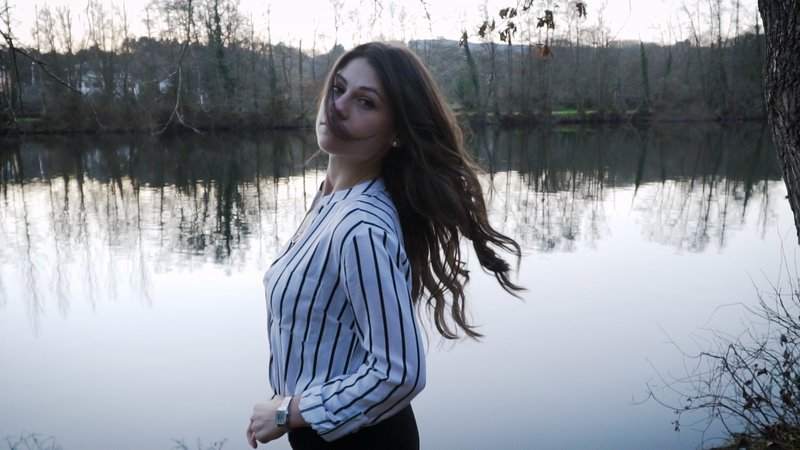
Con esta pequeña edición me inicio en el mundo de los video retratos, un estilo diferente a lo que suelo hacer normalmente pero que me resulta interesante por ser más cercanos y personales.
Gracias a Ana Pérez, por ofrecerse para este vídeo, grabado en la rivera del Miño a su paso por Lugo. Definitivamente, le sientas muy bien al paisaje ❤️
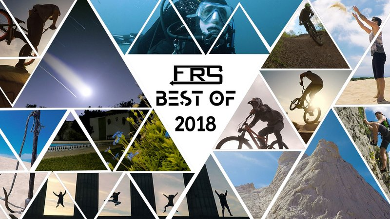
Y otro año más al que decimos adiós!! Cuesta resumir los mejores momentos del año en una edición tan corta, sobre todo cuando compartes momentos tan diferentes y especiales con amigos y familiares.
Ha sido un año de viajes, de mucho tiempo encima de la bicicleta, muchos kilómetros en las piernas recorriendo cumbres de Asturias, de horas bajo el agua contemplando los tesoros del océano y también de nuevas oportunidades como filmmaker.
2019 promete, os lo puedo asegurar, un cambio en el contenido de Freeride Spirit, nuevos proyectos están por llegar...

Después de tres años sin publicar un vídeo de Freeride propio, ¡aquí lo tenéis! Quiero pensar que he mejorado algo durante estos años, aunque no todo lo que me gustaría. De momento estoy contento con mis 360 sobre una MTB del 2006 y sus casi 20 kilos de peso y los nortshores en los bosques de Grado. 12 años en esto y todavía disfruto como un enano con estas cosas, a pesar de que mi tiempo libre se va acortando más y más! 😅
Quiero agradecer a los cámaras de este vídeo: Alejandro Caldevilla, Cristian García y al operador de dron: David Meirinhos por ayudarme en este vídeo, es difícil plasmar una idea cuando tienes que ser director, actor y editor al mismo tiempo. Sin vosotros esto sería imposible ¿Quién graba al que siempre está detrás de las cámaras? 😉

Alejandro Caldevilla y yo montamos las bmx al coche y nos vamos a rodar en los skateparks más emblemáticos del norte de España: La Cantera y Leioa (País Vasco) y Somo (Cantabria). Experiencia de un día muy intenso, montando desde por la mañana hasta última hora del día y con más de 500 km recorridos en coche. Para repetir!! 😉
El formato que decidí usar para este vídeo es un poco diferente al resto, acercándose más a lo que sería un "Vlog" donde se añade contenido más variado que en el caso de un vídeo deportivo al uso, espero que os guste!

Se acabó el verano de 2018 y lo único que nos queda son los recuerdos de los momentos que disfrutamos. Sol, playa, buceo, montaña y lugares emblemáticos, todos recopilados en este vídeo. ¡Espero que os guste!
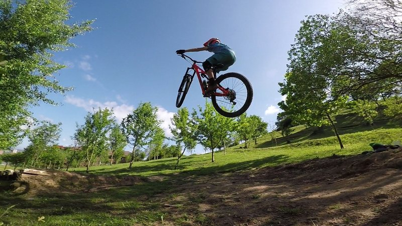
Pequeña edit de una tarde de saltos en el circuito de bicicletas Prado de la Fuente, en la pista finlandesa de Oviedo (Monte Naranco).
Riders: Tanais Menéndez & Cristian García.
Edición: Tanais Menéndez.
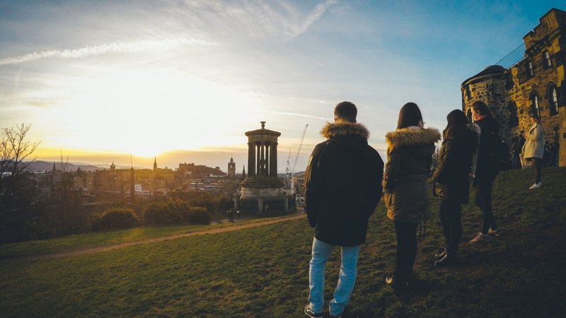
4 Days in Edinburgh es un resumen de los 4 días que estuve en Edimburgo, la capital escocesa. Una ciudad que parece detenida en el tiempo, donde cada callejón tiene una historia que contar y hasta los cementerios son lugares a visitar por su encanto especial. Lagos y colinas se encuentran rodeando esta ciudad, ofreciendo perspectivas que funden la ciudad con el mar, donde los puentes de Forth Road y Queensferry son las puertas de entrada a las legendarias Highlands.

Vídeo promocional de los corredores asturianos de enduro y descenso Cristian y Andrés García, que esta temporada estrenan sendas Specialized Enduro Comp bajo el patrocinio de Bicicletas Juan de cara a carreras como el Enduroastur y el Open de descenso.
Cámara y edición: Tanais Menéndez.
Filmado 100% con una GoPro Hero 4 Silver.
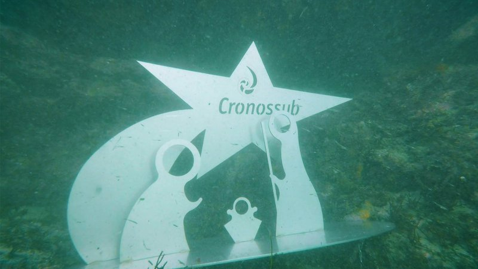
Video resumen de la colocación del belén submarino del club de buceo Cronossub y del club de actividades subacuáticas Illa Pancha con motivo de las fiestas navideñas en Ribadeo. Los belenes se colocaron en dos inmersiones diferentes, uno en la costa asturiana y otro en la costa gallega ¡¡Ha sido toda una experiencia participar en esta actividad con mis compañeros del club!!
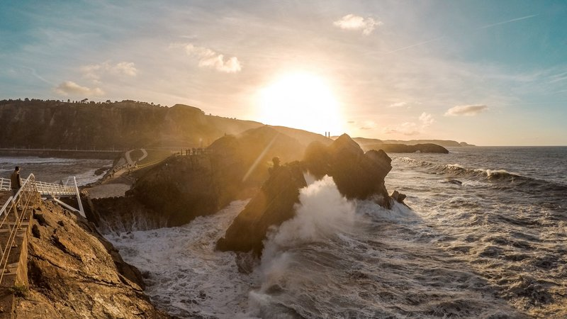
365 días pueden dar mucho de sí, cada día puede ser una aventura y así os lo quiero mostrar en este video recopilatorio de mis mejores momentos del año 2017. Un año lleno de nuevos retos y nuevos lugares, haciendo lo que más me gusta y en la mejor compañía. Buceando y estudiando especies marinas y alcanzando la cumbre más alta de Asturias, además de participar en un evento tan importante como el Red Bull Día de las Alas. Solo espero que el siguiente año esté lleno de momentos igual de buenos que estos y de muchos otros nuevos. Espero que hayaís tenido un gran año y que el año que viene os traiga grandes momentos! SEE YOU IN 2018!! 😉
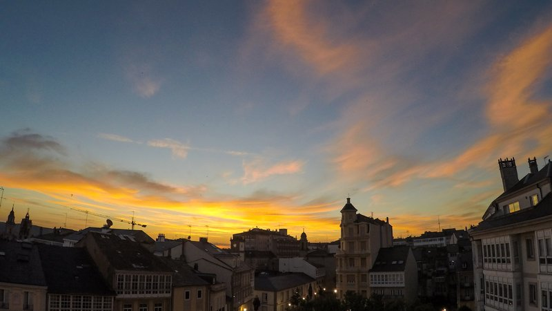
Muchas veces nuestra percepción del tiempo no nos permite contemplar las maravillas que se esconden en las cosas más normales de nuestro día a día, cosas como el curso de las estrellas o de la luna nos pasan desapercibidos por su lento pero progresivo desplazamiento. Solo si aceleramos el tiempo podemos ver la belleza que está escondida a simple vista. Te invito a un viaje a través de la cámara, a través de la técnica del timelapse para conocer parajes de Asturias y Galicia, tanto naturales como urbanos, en armonía.
Un proyecto que tuvo sus primeras grabaciones en 2015 finalmente se termina con una técnica que me fascina, no solo por los resultados, sino por todo lo que conlleva, sentarse durante horas en la naturaleza y contemplar, sumergirte en los pequeños detalles que nos brinda esta vida y con ello, sentirse afortunado. ¡Espero que os guste!

Señardá: Vivo sentimiento de nostalgia. Melancolía de un tiempo pasado.
Asturias es una tierra de contrastes, donde el pasado se entremezcla con un presente aletargado que parece haber olvidado tanto sus orígenes como su historia obrera. La minería, la siderurgia y la industria derivada trajeron prosperidad a esta tierra, proporcionando puestos de trabajos a muchos de nuestros familiares.
Señardá cuenta esta historia, nuestra historia, a través de un paseo por las ruinas del ayer, cuyos muros evocan tiempos de bulliciosa actividad donde ahora solo queda el silencio acompañado de la belleza de una naturaleza que lo envuelve todo.
Sacrificio, sudor y lucha tiñen este relato, una búsqueda del atisbo de la Asturias de nuestros antepasados, abuelos y padres. Un homenaje a todos ellos.
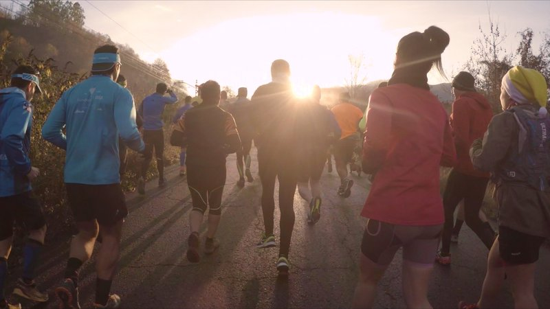
Pequeño resumen de lo que fue la tercera quedada solidaria organizada por los runners del Langreo Trail Team. Debido a un esguince de tobillo que tuve mientras bajaba no pude grabar el resto de la carrera, otra vez será!
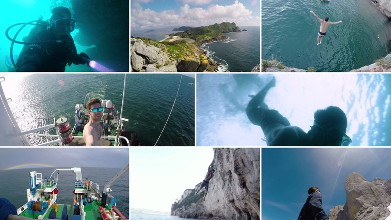
Este es el segundo recopilatorio anual que hacemos, un poco diferente con respecto al año pasado, pero igualmente con nuestro toque. Una mezcla de diferentes deportes, lugares, experiencias y momentos. ¡¡Espero que os guste!! ¡¡Nos vemos en 2017!!

Un vistazo casi anual a nuestros viajes de bmx a otras localidades, visitando skateparks dentro y fuera de Asturias y probando nuevos spots en nuestra ciudad. Momentos de risas al volante, nuevos trucos, grinds y alguna que otra caída 😂
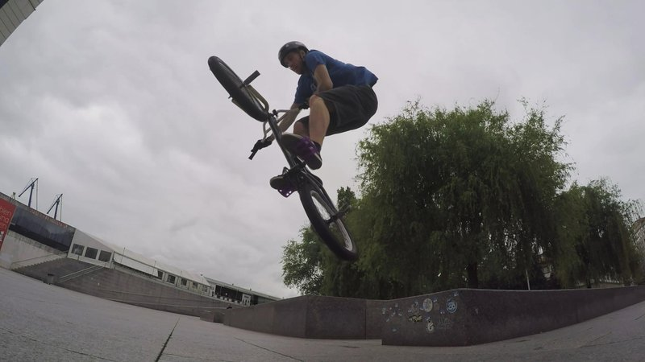
Pequeña edit en las calles y skateparks de Vigo, Galicia, después de un año montando con los bikers locales. Vivir en Vigo fue una buena experiencia, el nivel de los riders locales era realmente alto y mis progresos fueron mejores que los de otros años.

Una pequeña edit de Shuffle para el "Shuffler del mes" de la comunidad Shuffle Spain. Un remake de mi primer video de shuffle usando el mismo temazo de Vicetone: Hope.
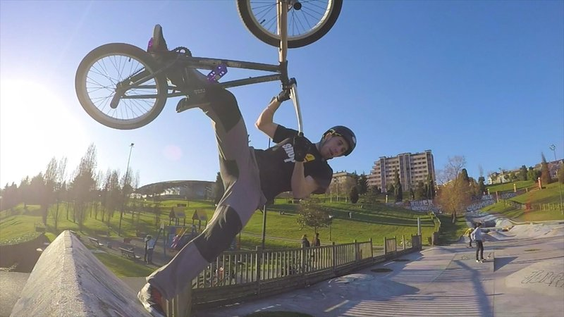
¡Todas nuestras aventuras con GoPro en 2015 en un único video! Algo de Freeride, BMX, running, buceo y momentos con los amigos. ¡¡Espero que os guste y nos vemos en 2016!!

Pequeña edit de una tarde de skatepark en Avilés. Mientras Jandro y yo hacíamos una ronda, un gran rayo cruzó el cielo, ¡por suerte lo pudimos grabar! ¡Una buena forma de terminar esta edit!

Este verano necesita un tributo. ¡¡Estuvo lleno de viajes, fiestas veraniegas, sol, playas y agua!! Moviéndome de Asturias a Cantabria, pasando por las Islas Canarias también. Sin dudas, un verano inolvidable, grabado 100% con mi GoPro 😉
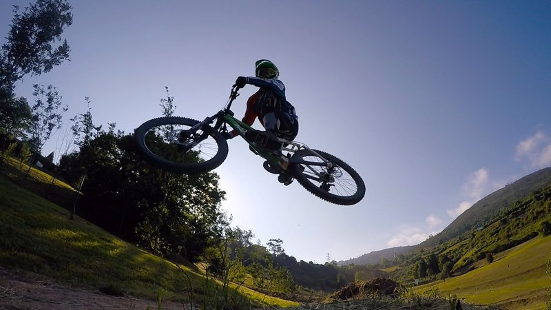
Un vídeo de Freeride montando en un nuevo circuito de Oviedo con diferentes zonas: Campillo, northshores y step-ups. Un sitio perfecto para hacer algunos trucos con la Kona Stinky.
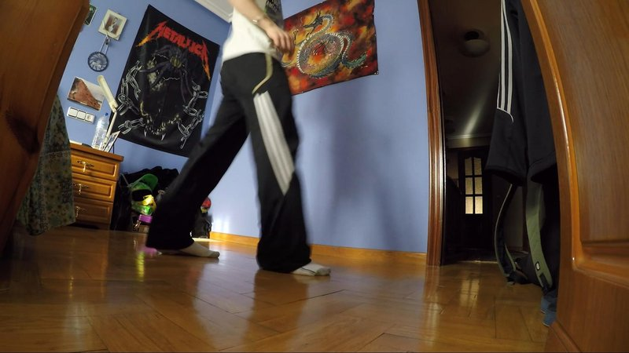
Una sesión de práctica mañanera en casa con un remix bootleg de Feel Good Inc de Gorillaz.

Mi primer video de buceo, descubriendo un mundo nuevo bajo el mar con variadas especies marinas, barcos hundidos y delfines en la superficie. Grabado con GoPro Hero 4 Silver en distintos lugares de Asturias y Galicia.

Nuestro primer video a ultra cámara lenta, usando los 120 fps de la GoPro Hero 4. En este video probamos nuevos ángulos para cambiar la perspectiva de los trucos que hacemos en los distintos lugares como skateparks, calles y campillos.

Un comercial para mi amigo Jandro que tiene un negocio de simuladores de conducción para videojuegos.

Es un día soleado, quedas con los amigos para bucear. Coges todo el equipo y te subes a la lancha. Mientras nos dirigimos al punto de inmersión unos amistosos visitantes se acercan, ¡DELFÍNES! Un momento increíble grabado con mi GoPro.
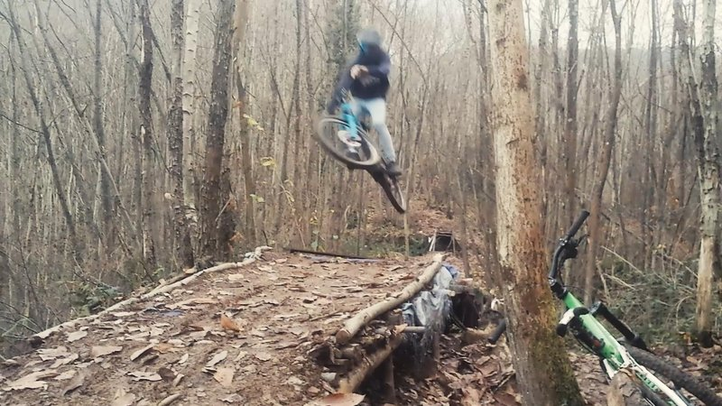
Pequeña edit para decir adiós a este año grabándonos a mi y a Carlos en un nuevo circuito de Freeride en Asturias. ¡Nos vemos en 2015!
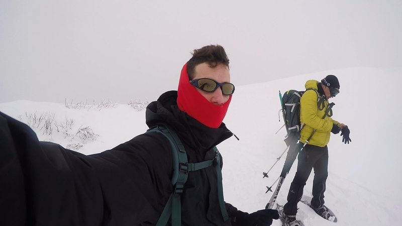
Un frío e increíble día haciendo raquetas de nieve en El Cellón, en Asturias. Una ventisca nos alcanzó llegando a la cumbre, por lo que decidimos volver sobre nuestros pasos.
Filmado 100% con una GoPro Hero 4 Silver.

Rubén Álvarez es uno de los bikers más jovenes que compiten en el Open EnduroAstur BTT. Este video se grabó en algunos de los circuitos oficiales del Open en El Entrego.

Un dia de shuffle en una fábrica abandonada a ritmo de la música de Sonlounger ¡Relájate y mira!
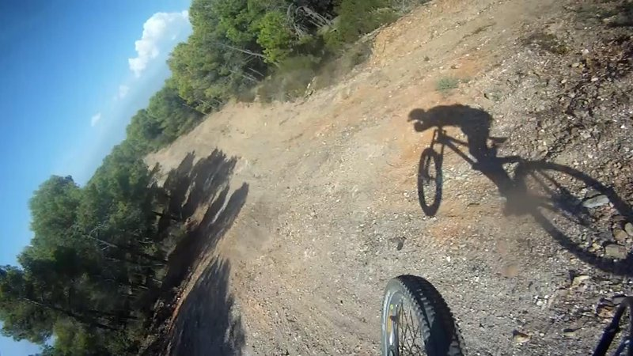
Nuestro rider en el sur de España, Carlos Otero nos envía un video de vista subjetica en El Conjuro, un circuito de descenso en Motril.
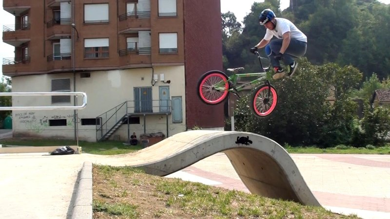
Uno de los mejores edits que he hecho. Alejandro Caldevilla, rider bmx patrocinado por Da2 Shop streetwear, nos enseña sus nuevos trucos de bmx, como tailwhips y otros combos nuevos.
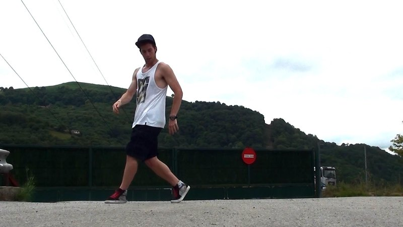
Un video para celebrar un año bailando shuffle con canciones de diferentes estilos.

Hacía mucho que no hacía un video de BMX así que... ¿Qué tal si hago uno nuevo en una tarde de verano de relax y música de buen rollo?

Mi primer video de Shuffle después de 10 meses de práctica.
Canción: Vicetone - Hope

Es invierno, se ha terminado la temporada de enduro, estás aburrido en casa, así qué, ¿cuál es el plan? ¡Llama a tus amigos y monta tu bici de noche! ¡Coge tus linternas, abrigo y algo de carne porque también vamos a hacer una barbacoa! Suena bien, ¿no? Echa un vistazo 😉

Video resumen del 2º Campeonato de Asturias de Enduro. 4 tramos cronometrados llenos de barro en un día helado, un día típico de mountain bike 😉

La última carrera del Open EnduroAstur BTT tiene lugar en Tuña, un lugar con muchos desniveles que hacen de esta carrera una de las más duras por los grandes desniveles. Al final del evento, se proclamó como campeón del Open el cántabro Jose Antonio Díaz Arriola, seguido del vasco Markel Uriarte.

Un trailer de la última prueba del Open EnduroAstur en Tuña. Un rápido vistazo a los mejores momentos de las anteriores carreras en El Entrego, Avilés, Oviedo y Gijón.
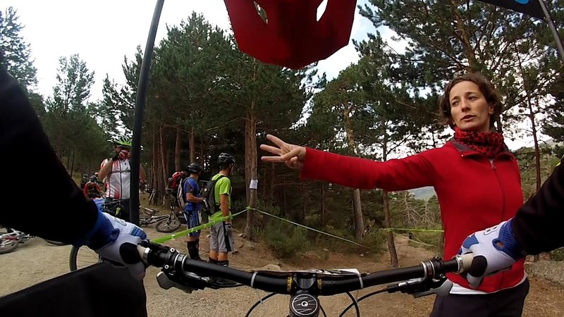
Video subjetivo de nuestro corredor de descenso/enduro Norberto Menéndez en la Cannondale Big Ride en Cercedilla, Madrid. Esta fue la primera competición de Norberto fuera de Asturias y los resultados fueron realmente buenos, alcanzando los puestos más altos en la clasificación.

El Open EnduroAstur BTT se mueve a la capital de Asturias, Oviedo, Esta vez con un día soleado, descensos con mucho polvo ¡y una competición de saltos para ver quién puede volar más lejos!
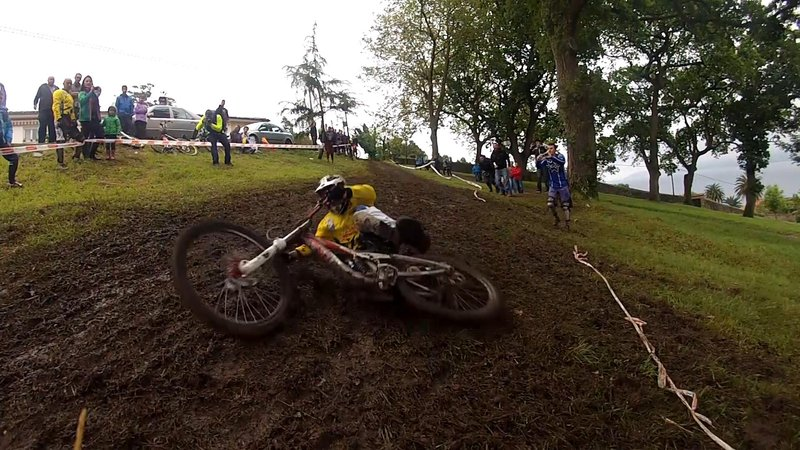
El descenso urbano del campeonato de Asturias de descenso. Fue un día lluvioso, con mucho barro en algunas partes del circuito y escaleras mojadas en el resto lo que hacía muy difícil hacer una bajada rápida. El 75% del video es una caída tras otra de cada uno de los corredores 😂

2ª carrera del Open EnduroAstur BTT, que tuvo lugar esta vez en Deva, Gijón. 4 tramos cronometrados, uno de ellos usado para el campeonato de descenso. Esta fue una de las mejores carreras del año, con muchos corredores, incluyendo a nuestro corredor Norberto Menéndez y algunos miembros del Astur Trail Builders.
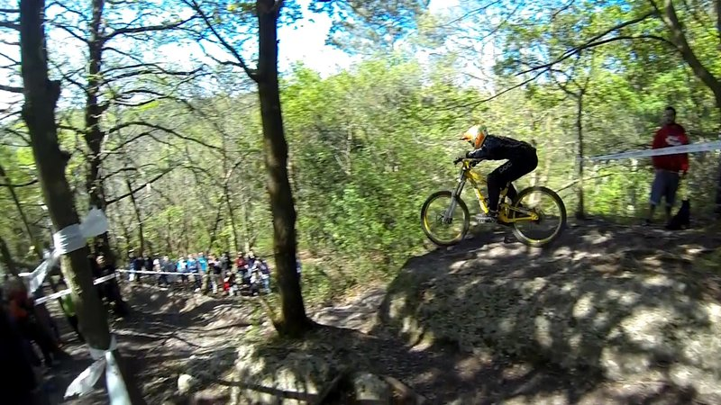
La primera carrera de descenso de 2013 y la primera vez en la que el equipo de Freeride Spirit compite en una carrera de descenso. Fue un fin de semana intenso de montar en bici y conocer personas de diferentes partes de Asturias y España.

La primera carrera de enduro del Open EnduroAstur y ¡viene con un extra de nieve! El tiempo fue realmente inclemente con los corredores, abandonando muchos de ellos en mitad de la prueba. Fue duro además documentar el evento, tanto por mí parte como por Octavio con esas condiciones de frío y nieve.
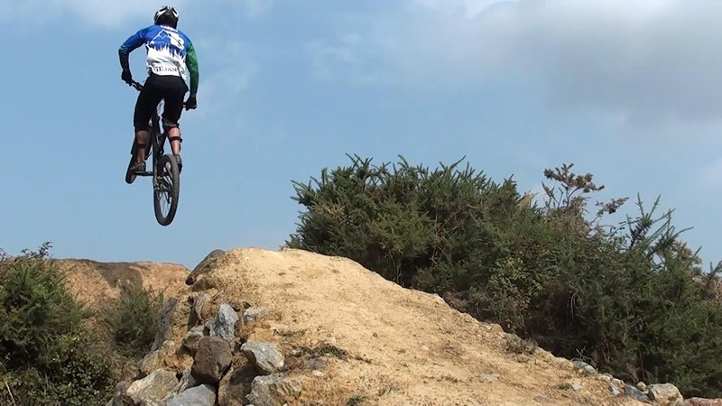
Viaje de nuestros corredores Norberto y Octavio con otros amigos en Andorra, con una breve parada en el País Vasco, montando en lugares emblemáticos como el Bike Park de Vallnord.

PELÍCULA DIVIDIDA EN UNA LISTA DE REPRODUCCIÓN, EL SIGUIENTE VIDEO COMENZARÁ CUANDO TERMINE EL ANTERIOR.
¡¡Uno de nuestros mejores (y más largos) proyectos!! Nos llevó casi un mes hacer posible esta película, pero mereció la pena. Progressión Bike 2 es una película especial para nosotros, ya que unió a todo el equipo de Tanais Menéndez Filmmaker en un solo video, con partes dedicadas para cada uno de ellos y una escena final con todos nosotros haciendo lo que realmente nos hace felices, ser libres encima de una bicicleta. Gracias a cada amigo y familiar que nos apoyó en este proyecto. ¡¡Esperamos poder crear una tercera película que pueda ser mejor que esta!! PD: ¡No os olvideis de mirar los créditos con caídas y tomas falsas!

Este video se grabó mientras estábamos grabando las tomas para la película "Progression Bike 2" en el descenso de Deva, usando las GoPros de nuestros amigos en distintos anclajes. Los riders que salen en este videos son parte del Astur Trail Builders: Norberto Menéndez (también corredor de Tanais Menéndez Filmmaker), David Meirinhos e Iván.
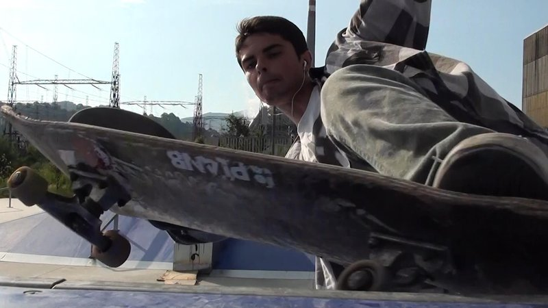
Trailer de una competición de skate y bmx organizada por nuestros sponsor Da2 Shop en La Felguera. Acudieron una gran cantidad de bikers y skaters de distintas partes de Asturias y mucha gente se unió durante la competición, con jueces puntuando las rondas de los bikers y skaters. Nuestro biker Alejandro alcanzó el tercer puesto, ¡¡muy orgullosos de tí compañero!!

En una fría tarde de Halloween, unos bikers deciden celebrar su particular "truco o trato". Jason de viernes 13, el asesino de Scream, un viejo siniestro y un hombre lobo hacen sus mejores acrobacias en una bmx. PD: Algunas cosas raras ocurren al final del video 😉
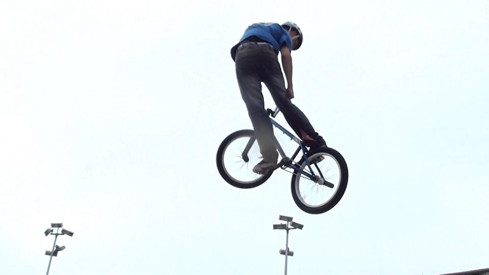
Nuestro primer video 100% bmx, con todos los riders de bmx de Freeride Spirit en 2011 (Tanais Menéndez, Alejandro Caldevilla, Carlos Otero y Nacho Iglesias). La intro de este video se inspiró en una película de terror experimental de los 90 del director E. Elias Merhige y fue grabado en una fábrica abandonada en Asturias.
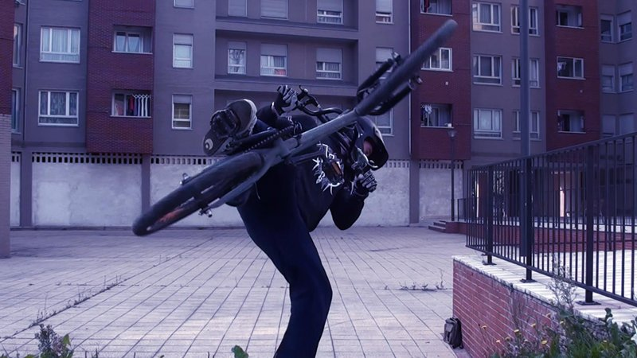
Video promocional de BMX y MTB para mi patrocinador, Da2Shop, tienda de ropa urbana y skateboard.

En 2010, los bikers urbanos de Oviedo crearon un nuevo formato de competición. El evento se organizó en el Skatepark de Oviedo y acudieron personas de distintas partes de Asturias. La competición consiste en diferentes modalidades: Skatepark, descenso uno contra uno, mejor truco y bunny hop. El mejor en cada categoría gana un premio. Freeride Spirit produjo el video oficial de esta competición, ¡nada mal para ser la primera competición de bici en Oviedo!

Uno de los primeros entrenamientos de descenso después de mi accidente. Bajando despacio, pero es un comienzo después de todo.
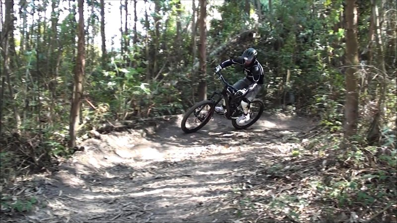
Este es el tercer video de Carlos Otero, con mejor calidad de imagen y mejor técnica en la bicicleta. Grabado en agosto de 2010 en dos circuitos de descenso de Asturias: Deva (Gijón) y la Escombrera (San Martín del Rey Aurelio).

Un video de bmx street que hice para Nacho Iglesias. En este video superpuse tomas de un videoclip de un rapero asturiano llamado Arma X.

En principio esto iba a ser un video promocional pero al final cambió completamente por culpa de la caída que me rompió el hombro en Gijón. Un buen video con algunos de mis mejores trucos: 360's, barspins y grandes saltos.
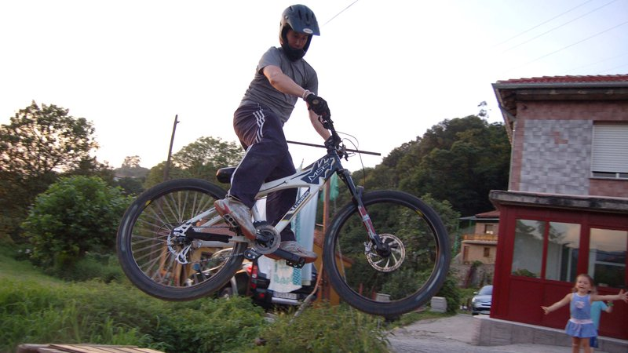
Las mejores fotos de 2009 en un solo video. Un año de nuevos trucos, descensos más rápidos y muy buenos momentos guardados en estas fotografías.

MTB en las calles de La Felguera, mi ciudad natal, con música hardcore de Escuela de Odio.

Un video de vista subjetiva de Carlos Otero y mío en el descenso de Deva en Gijón grabado en 2009.

Un proyecto audiovisual personal que hice para una tarea de instituto. Solo un día de freeride más 😉
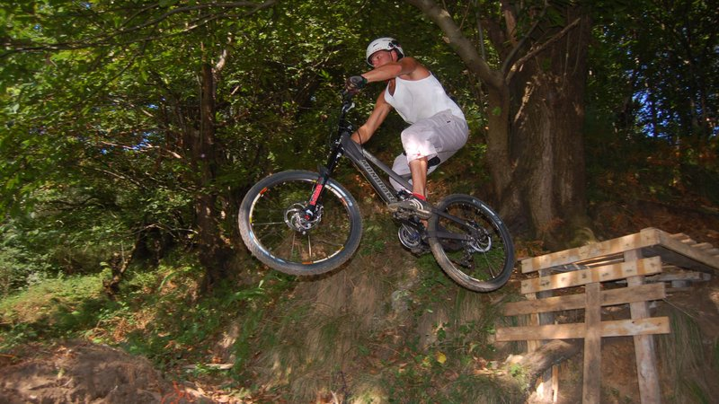
La Photo Session de 2008, un año de cambios con nuevas bicis para cada uno de los bikers de Freeride Spirit (una Mondraker Plunder para Norberto, una Specialized P2 para Carlos y una MSC Lunatika para mí). Al final de este video podrás encontrar dos bonus clip de este año.

Un video recopilatorio de este verano lleno de Freeride, nuevos circuitos de MTB en Campona y también con partes de freeride, street y campillos.
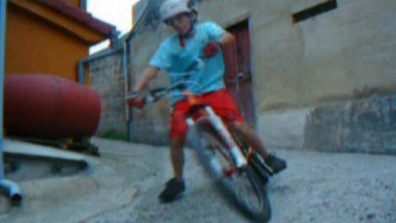
Segundo video de nuestro biker Carlos Otero, sus primeros pasos en el mundo del mountain bike.
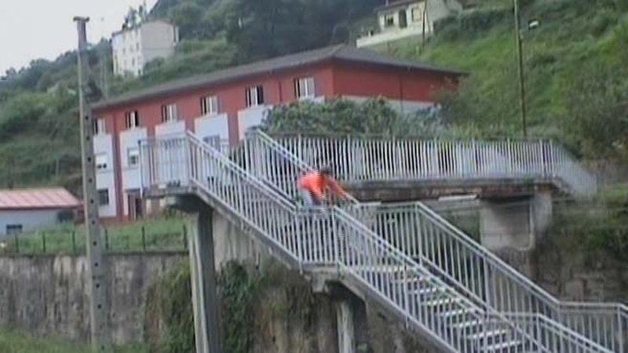
Uno de mis primerísimos videos de MTB urbano en diferentes lugares de la cuenca minera en Asturias.
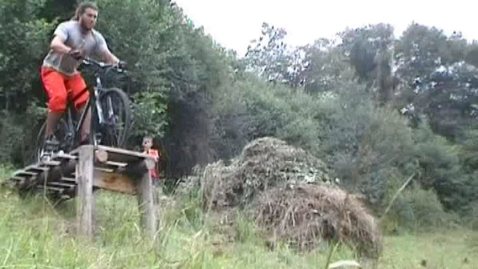
Tomas de los días en los que se filmó el video "Freeriding in the Jungle Bikepark"con Norberto Menéndez, Carlos Otero y yo.

En un día de sol en las fiestas de pueblo de La Felguera, la clase de Tai-jitsu del gimnasio Félix Shotokan (en el que me incluyo) hizo una exhibición de artes marciales.

El Jungle Bikepark es un circuito de freeride construido por mi padre, Santiago, En este video podéis ver las diferentes pistas del bikepark incluyendo northshores que pasan por encima de un pequeño río.
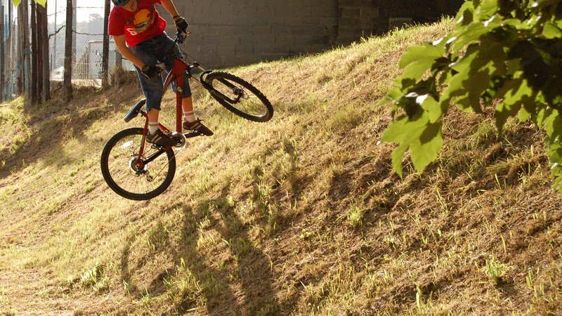
Un año entero de fotos en un solo video, incluyendo los comienzos de los componentes más viejos de Freeride Spirit: Carlos Otero, Norberto Menéndez y yo.

Nuestra primera película de mountain bike, grabada entre 2006 y 2007. Nuestros comienzos más tempranos que forman parte de lo que somos actualmente, un grupo de amigos haciendo lo que realmente nos gusta.